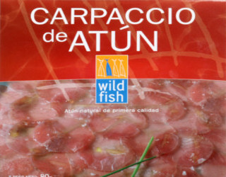

| Pescadería el Anzuelo | ||
|  | El carpaccio es una preparación en finas láminas de una carne o pescado, crudo. Dentro de las carnes la más usada es la de ternera. Aceite de oliva y algunas gotas de limón, todo ello decorado con virutas de queso Grana Padano. | |
| Vendemos Pescados desde que nacieron | ||